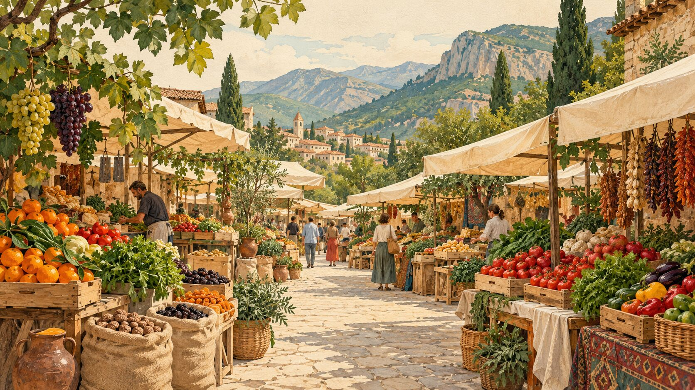

Онлайн-рынок Ахалкалаки: заказывайте продукты у местных поставщиков с доставкой на дом. Мясо и птица, овощи и фрукты, колбасы, бастурма и суджух, орехи и сухофрукты, лаваш, крупы, мёд и напитки.
Товар на вес оплачивается по фактическому весу после взвешивания. Если качество не устроило — проверьте товар при доставке, и мы заберём его обратно.